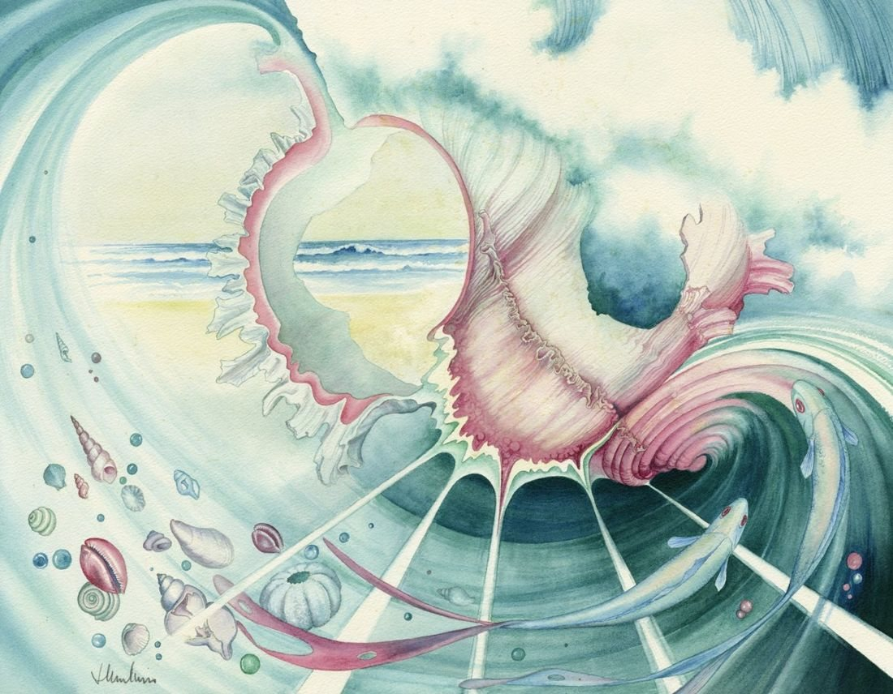

Looking through a shell
No. 170- Medium
- Watercolour on paper
- Size
- 38 × 50 cm
- Year
- 1989
- Price
- £450
Looking through the broken shell as it is tossed by the wave, along with fishes and shells, through to the calm beach in the background.
Ask about this paintingOr email enquiries@joanmullinsart.co.uk, quoting No. 170. UK only. Collection from Nantwich is free; UK postage is quoted when you enquire.